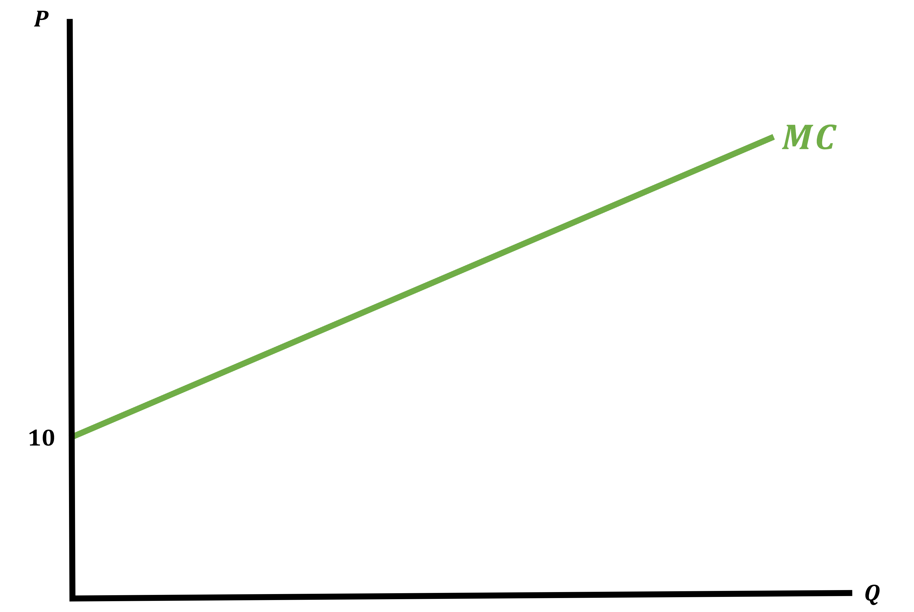
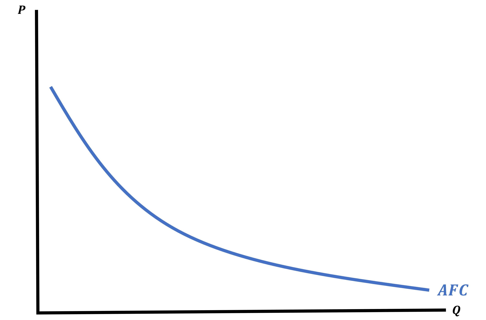
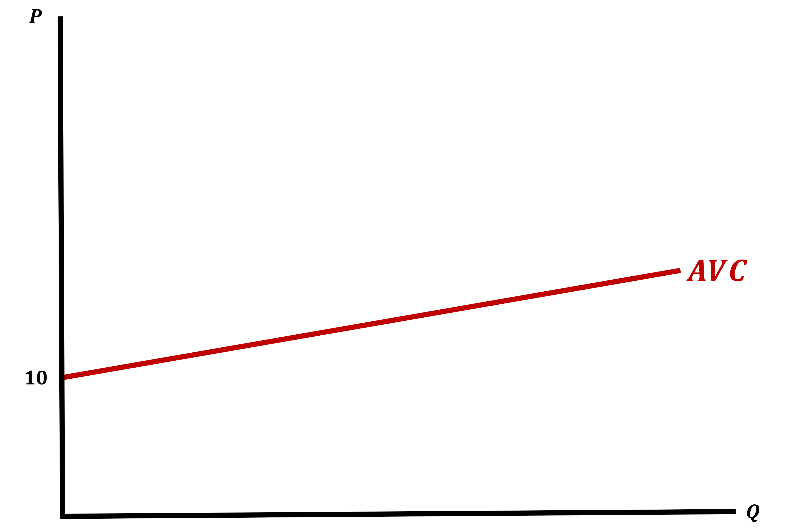
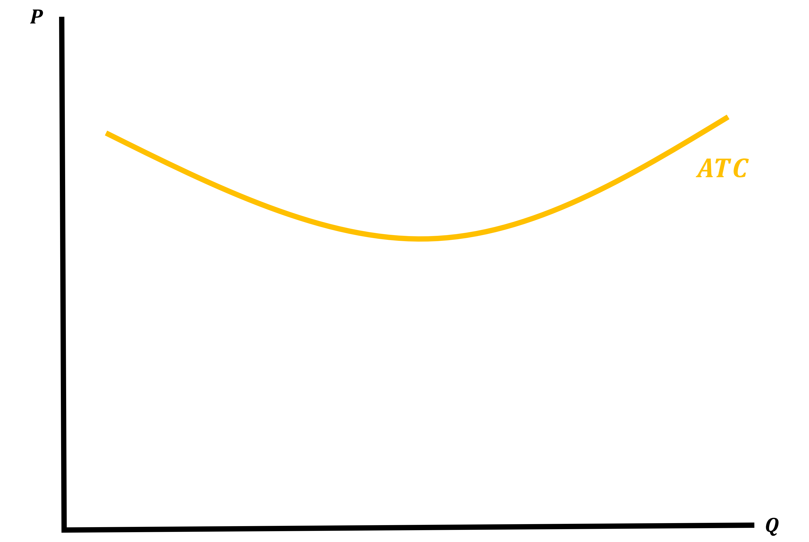
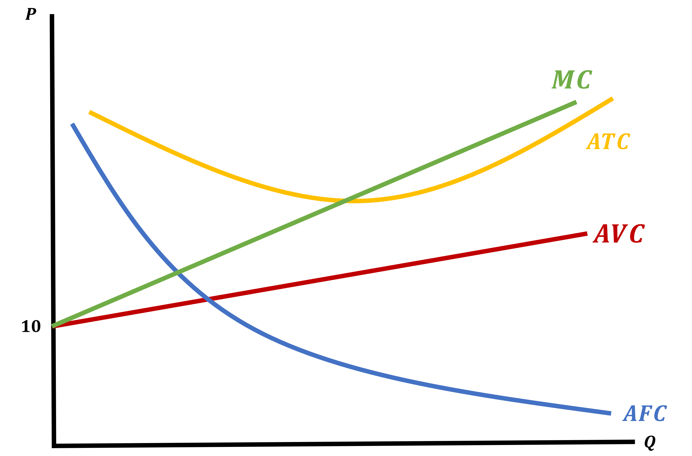
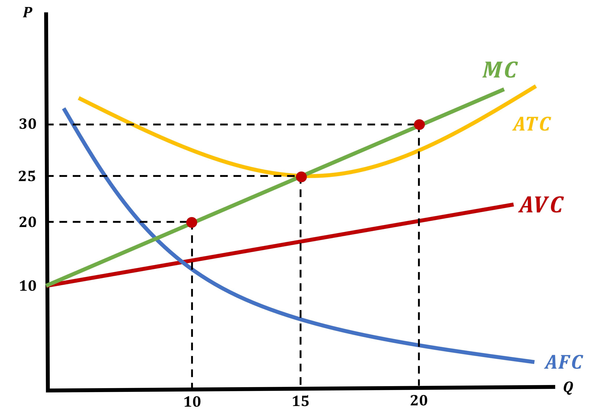
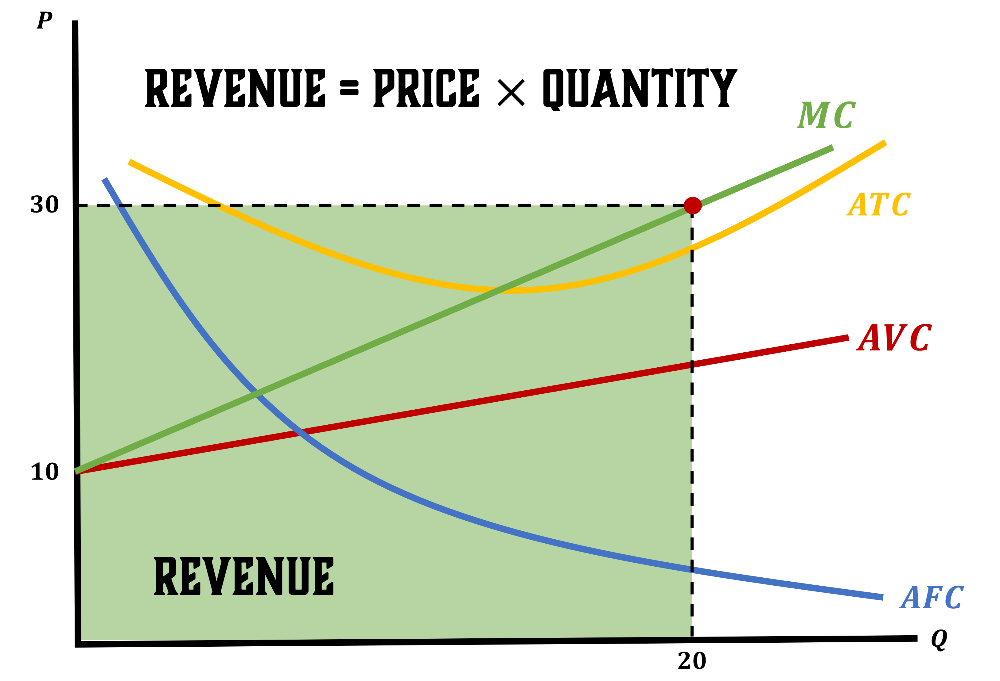
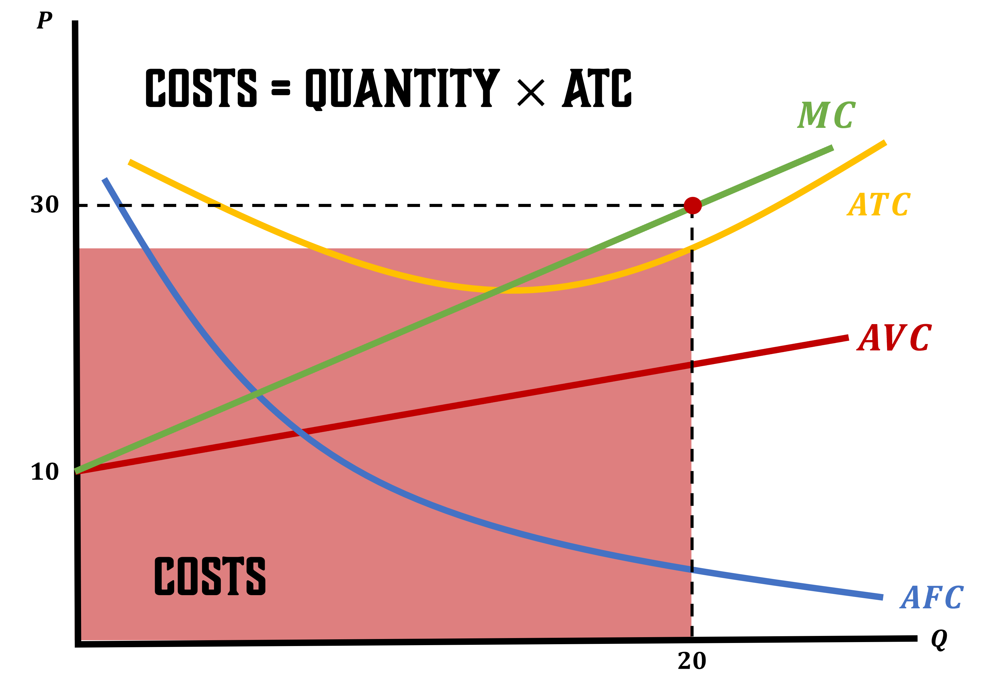
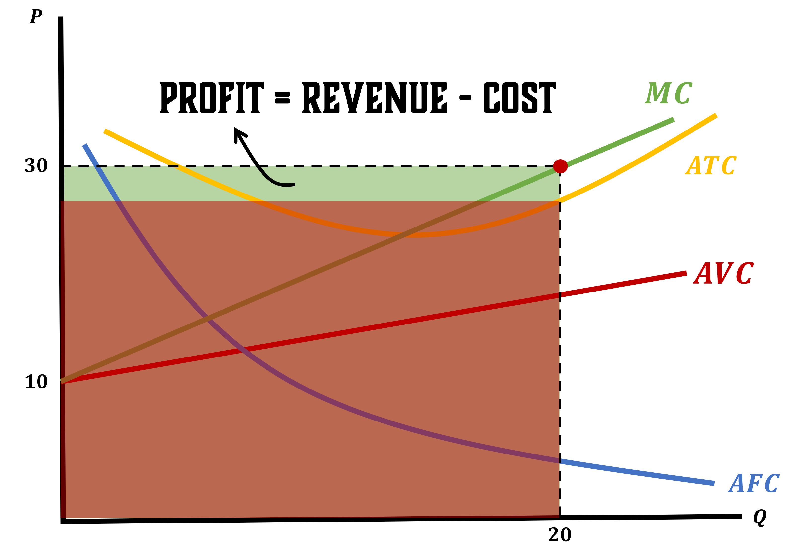

Finding the Firm’s Supply Function
Recall that we have assumed that a Perfectly Competitive firm cannot set its price
It does not have the power to do so in the market
- To be more exact, any changes it makes does not affect the market equilibrium
So because the firm just looks at the market price \((P)\) and chooses how much to produce, we will model supply as a function of price
Let’s continue to use our previous firm as an example, but we will leave Price as a variable:
. . .
\[ \pi(Q) = P \cdot Q - C(Q) = P \cdot Q - Q^{2} - 4Q - 20 \]
Find MC and set equal to Price
\[\begin{align*} MC &= 2Q + 4 \\ \\ MC &= P \\ 2Q + 4 &= P \end{align*}\]
Solve for \(\; Q^{*}\)
\[\begin{align*} 2Q + 4 &= P \\ 2Q &= P - 4 \\ Q^{*} &= \frac{P - 4}{2} \end{align*}\]
Finding Supply
So our Supply Function will look like
\[ Q^{*} = f(P) \]
This tells us how much a firm will produce as a function of the price
We can also find the Supply Curve
. . .
This will be what we are able to graph, where \(P\) will be on the y-axis
\[ P = f(Q^{*}) \]
We have now created a Supply Curve that is in the same format as our Demand Curve
Let’s See It Graphically
For the Cost Function
\[ C(Q) = \frac{1}{2}Q^{2} + 10Q + 10 \]
Find and Draw the MC, AVC, AFC, and ATC
. . .
Marginal Cost
\[ MC = Q + 10 \] 
Average Fixed Cost
\[ AFC = \frac{10}{Q} \] 
Average Variable Cost
\[ AVC = \frac{1}{2}Q + 10 \] 
Average Total Cost
\[ ATC = \frac{1}{2}Q + 10Q + \frac{10}{Q} \] 
Where is Supply?
Let’s put it all together

Where is Supply?
Okay, so there wasn’t an explicit Supply Curve
But it is there, we just have to polish it up a bit
Lets add some prices and map out the corresponding optimal quantities
. . .
Using \(P = MC\) where \(MC = Q + 10\) and \(P = 20 , 25 , 30\) the optimal quantities are: \[ P = MC \]
\[\begin{align*} 20 &= Q + 10 \rightarrow Q = 10 \\ 25 &= Q + 10 \rightarrow Q = 15 \\ 30 &= Q + 10 \rightarrow Q = 20 \end{align*}\]
Where is Supply?

The Marginal Cost Curve maps the market price to the profit maximizing \(Q^{*}\)
- The MC Curve IS the Supply Curve for a perfectly competitive firm \[ P = MC = Q + 10 \]
Finding Profit from a Graph
We can also use this graph to find a firm’s profits
We will do this in steps:
- Find revenue (Recall \(\text{Revenue} = P \cdot Q\))
- Find the firm’s total cost using Average Total Costs
- Use the fact that profit is just the difference between Revenue and Cost
1- Finding Revenue
Assume that \(\; P = 30 \;\) in this market
We know that at \(\; P = 30 \;\) we have \(\; Q = 20\;\)
\[\begin{align*}
\text{Revenue} &= P \cdot Q \\
\text{Revenue} &= 30 \cdot 20 \\
\text{Revenue} &= 600
\end{align*}\]

2 - Finding Costs (Using ATC from Graph)
Because we do not graph Costs we will use the ATC to find total costs To find Total Costs, first recall how we found ATC \[\begin{align*} ATC = \frac{C(Q)}{Q} \;\; \Rightarrow \;\; C(Q) = ATC \cdot Q \end{align*}\]
. . .
Our Average Total Costs are \(\; ATC = \frac{1}{2}Q + 10Q + \frac{10}{Q}\)
\[\begin{align*} C(Q) &= ATC \cdot Q \\ C(Q) &= Q \cdot \left(\frac{1}{2}Q + 10 + \frac{10}{Q}\right) \\ C(Q) &= \frac{1}{2}Q^{2} + 10Q + 10 \\ C(20) &= \frac{1}{2}(20)^{2} + 10(20) + 10 \end{align*}\]
\[ \text{Costs} = 410 \]

Finding Profit
Profit will simply be the difference between these two boxes

Finding Profit
Something imoprtant that we have already mentioned is tha profits can be Positive, Negative, or Zero
In math terms, this is determined if:
- When \(P > ATC\), the firm has Positive Profits
- When \(P < ATC\), the firm has Negative Profits
- When \(P = ATC\), the firm has Zero Profits
Why Would a Firm Ever Want Zero Profits?
We are thinking about Economic Profits
Remember this means that we care about Opportunity Costs
What this implies is that firms will squeeze their productivity as much as possible
. . .
This is a concept that trips up many non-economist minded folk so its worth expanding on:
\[\begin{align*} \text{Accounting Profits} = \text{Revenue} - \text{Accounting Costs} \end{align*}\]
Firms want their Accounting Profits to be positive, its how firms stay in business
Pushing Economic Profits Down to Zero
\[\begin{align*} \text{Accounting Profits} = \text{Revenue} - \text{Accounting Costs} > 0 \rightarrow \; :) \end{align*}\]
Now let’s compare this to Economic Profits
. . .
\[\begin{align*} \text{Economic Profits} = \text{Revenue} - \left(\text{Accounting Costs} + \text{Opportunity Costs}\right) \end{align*}\]
- Opportunity Costs will push Economic Profits down as much as possible
- This means that the firm will be making their best possible choice
. . .
Because firms do not want to be in the negative, their maximum Economic Profits will be equal to zero